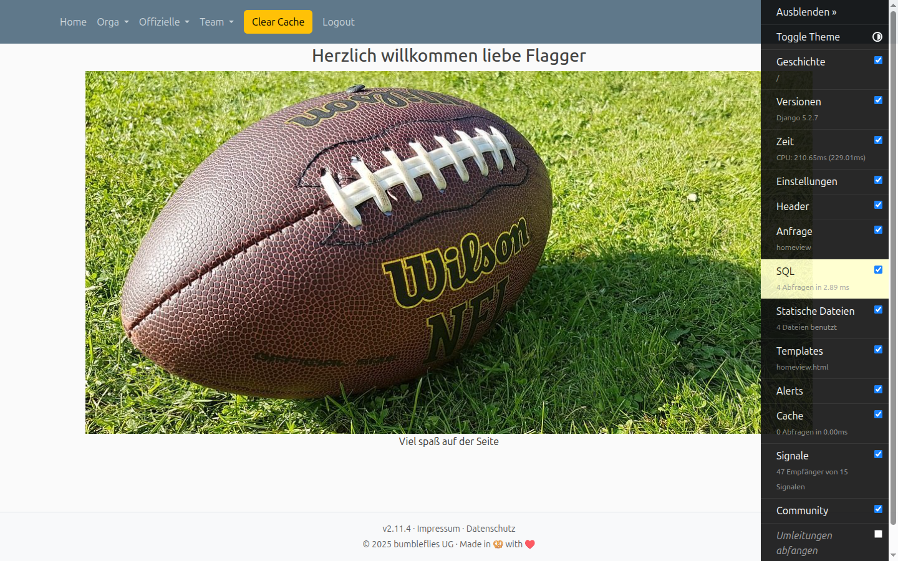
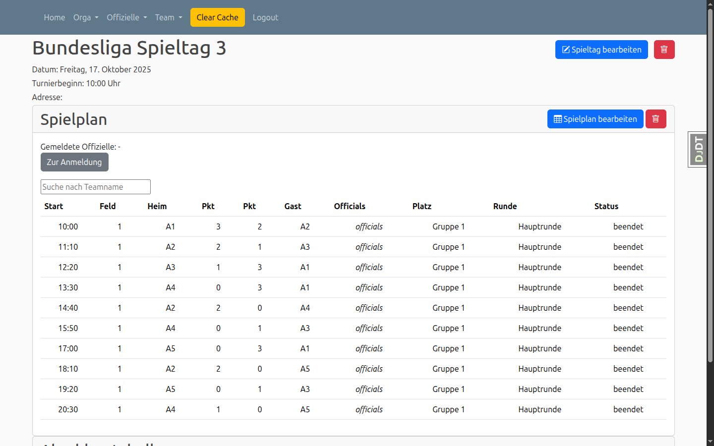
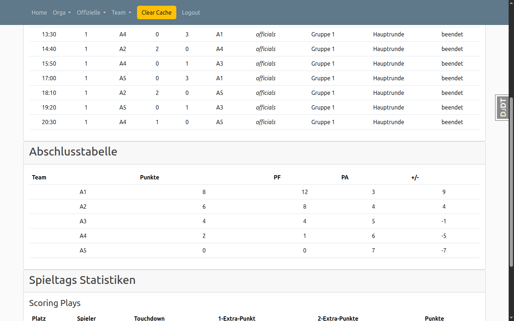

Spieltage verwalten
Übersicht
Die Spieltagsverwaltung ist das Herzstück von LeagueSphere. Hier können Sie Spieltage anlegen, bearbeiten und verwalten. Sie sehen alle anstehenden Turniere, Spielpläne und Ergebnisse auf einen Blick.
Von der Startseite aus navigieren Sie zur Spieltagsübersicht, indem Sie auf einen Spieltag oder das entsprechende Ligajahr klicken. Die Übersicht zeigt alle Spieltage chronologisch sortiert an.

Spieltagsliste
Die Spieltagsliste zeigt alle Spieltage für ein ausgewähltes Ligajahr an. Sie können nach Divisionen filtern, um nur relevante Spieltage anzuzeigen.
Nach Division filtern
Klicken Sie auf eine Division (z.B. "some_division"), um nur Spieltage dieser Division anzuzeigen. Dies ist besonders hilfreich bei Ligen mit mehreren Divisionen oder Leistungsklassen.

Alle Spieltage anzeigen
Die vollständige Liste zeigt alle Spieltage mit Datum, Division und Turniername an. Sie können direkt auf einen Spieltag klicken, um die Detailansicht zu öffnen.

Spieltagsdetails
In der Detailansicht sehen Sie alle Informationen zu einem Spieltag: Datum, Turnierbeginn, Adresse und den kompletten Spielplan. Die Spiele werden mit Startzeit, Feld, Teams, Punktestand und Status angezeigt.
Spielplan und Ergebnisse
Der Spielplan zeigt alle Spiele des Tages in chronologischer Reihenfolge. Jedes Spiel wird mit Heim- und Gastteam, Punktestand, zugewiesenen Schiedsrichtern und Spielstatus angezeigt. Nach Abschluss der Spiele werden die Endergebnisse direkt im Spielplan dargestellt.

Abschlusstabelle und Statistiken
Nach Abschluss eines Spieltags können Sie die Abschlusstabelle und Spieltagsstatistiken einsehen. Die Tabelle zeigt Punkte, Points For (PF), Points Against (PA) und die Punktedifferenz für jedes Team.
Spieltagsstatistiken
Die Statistiken zeigen Top-Scorer, Defensive Plays (Interceptions, Safeties) und weitere wichtige Kennzahlen des Spieltags. Dies hilft bei der Auswertung und Analyse der Teamleistungen.

Tipp: Statistiken exportieren
Sie können die Statistiken und Tabellen für weitere Analysen exportieren oder direkt über die Druckfunktion Ihres Browsers ausdrucken.
Spieltag erstellen
Über das Orga-Menü können Sie neue Spieltage anlegen. Dabei geben Sie Datum, Turniername, Division und weitere Details an.
Spieltag bearbeiten
In der Detailansicht eines Spieltags finden Sie die Schaltfläche "Spieltag bearbeiten". Hier können Sie Datum, Turnierbeginn, Adresse und andere Informationen anpassen.